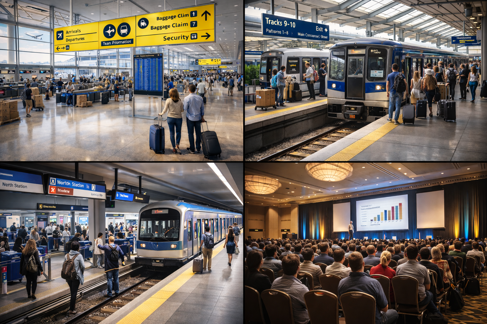

NuraEye VMS
(Video Management Service)
NuraEye VMS transforms your existing CCTV cameras into an intelligent, AI-powered video platform that delivers real-time alerts, operational insights, and investigation-ready evidence across all locations.

Restaurants / Fast food / Hospitality
Upgrade existing CCTV into an intelligent assistant across dining areas, kitchens, and POS—improving security, safety, operations, and customer experience without changing camera infrastructure.
Security & Loss Prevention
- POS/cash-counter exception alerts
- Backdoor & stockroom intrusion
- After-hours access anomalies
- Vandalism & theft hotspots
Safety
- Slip/fall detection in dining & kitchen
- Fire/smoke cues in kitchen zones
- Restricted-area entry (hot/knife zones)
- Aggression / raised-voice escalation
Operations
- Queue length & wait-time SLAs
- Table occupancy & turn-time
- Peak-period forecasting signals
- Staff attendance & coverage
Customer Experience
- Dwell heatmaps & journey insights
- Assistance alerts in service zones
- incident auto-clips for review
- Multi-site rollup KPIs

Retail Stores
Reduce shrink and improve execution with real-time alerts and store intelligence powered by AI—using your existing CCTV infrastructure at scale.
Loss Prevention
- Self-checkout / POS fraud pattern detection
- Concealment & suspicious behavior detection
- Stockroom & cash-office access control
- Repeat offender watchlists (policy-based)
Operations
- Queue monitoring & staffing triggers
- Out-of-stock & shelf-gap alerts
- Planogram & promotion compliance
- Store opening / closing compliance
Experience & BI
- Footfall, dwell & heatmaps
- Zone conversion proxy metrics
- High-value zone assistance prompts
- VIP recognition (opt-in)
Investigations
- Evidence packaging (auto-clips)
- Timeline & case export
- Natural-language search of incidents
- Role-based access & retention
Banking (Branches + ATMs)
Protect ATM and branch operations with low-latency, high-assurance video intelligence—delivering real-time alerts, audit trails, and centralized visibility across locations.
ATM Security
- ATM entry loitering & tailgating detection
- Tamper & anomaly cues near ATM fascia
- After-hours presence detection
- Suspicious clustering pattern alerts
Branch Security
- Restricted-zone entry (vault / server rooms)
- Aggression & robbery indicator detection
- Door held-open anomaly alerts
- Access policy enforcement
Operations
- Queue & wait-time escalation alerts
- Counter staffing optimization signals
- Incident response performance metrics
- Audit-ready event logs
Customer & Risk
- VIP / known-customer workflows (policy-based)
- Dispute resolution auto-clips
- Compliance reporting dashboards
- Multi-branch command-center view
Education (Schools / Campuses)
Improve campus safety with proactive alerts and fast investigations across perimeters, classrooms, corridors, and shared spaces—using AI-powered video intelligence.
Campus Security
- Perimeter intrusion & after-hours entry detection
- Intruder detection in restricted areas
- Weapon-like object escalation (policy-based)
- Visitor monitoring & alerting
Student Safety
- Bullying & fight detection
- Crowding detection in corridors
- Playground incident alerts
- Emergency response workflows
Operations
- Attendance monitoring (policy-based face roll call)
- Bus bay boarding safety monitoring
- Restricted-door tailgating detection
- After-hours facility monitoring
Governance
- Incident auto-clips & investigation timelines
- Trend dashboards by zone & time
- Privacy controls & role-based access
- Cross-camera tracking for investigations
Healthcare (Hospitals / Clinics / Elder Care)
Enhance patient safety and clinical compliance with edge-first, AI-powered video intelligence—delivering proactive alerts and operational flow analytics across care environments.
Patient Safety
- Fall detection & bed-exit alerts
- Wandering / elopement detection
- Aggression detection in emergency rooms
- Priority escalation workflows
Clinical Compliance
- PPE compliance in sterile zones
- Hygiene protocol adherence (aggregate insights)
- Restricted-zone entry alerts
- Audit logs for compliance reviews
Operations
- Wait-time analytics (registration / pharmacy)
- Room & bed utilization signals
- Turnaround time performance metrics
- Staff response-time tracking
Privacy & Security
- Role-based access with video masking
- Configurable video retention windows
- Evidence packaging for incidents
- On-edge processing options
Warehousing & Manufacturing
Reduce incidents and downtime with safety-first video analytics and practical operational KPIs—delivered through AI-powered monitoring across warehouses, docks, and production floors.
Safety (EHS)
- PPE compliance (helmet, vest, gloves)
- Forklift–pedestrian proximity alerts
- Restricted-zone entry detection in hot areas
- Near-miss and unsafe-motion flags
Operations
- Dock congestion & dwell-time analytics
- Staging overflow & lane occupancy detection
- Conveyor jam & chute overflow alerts
- Throughput bottleneck detection
Quality
- Visual damage & defect detection
- Missing label or seal issue alerts
- Wrong-item-in-bin verification
- Exception clipping for QA review
Governance
- Shift-level KPI rollups
- Incident workflows & audit trails
- Multi-site standardization reporting
- Edge-first deployment for reliability

Gated Communities / Residential Societies
Turn gates and common areas into proactive safety and operations systems—privacy-first and edge-ready—using AI-powered video intelligence across residential environments.
Gate & Perimeter
- ANPR entry & exit logs with watchlists
- Tailgating / piggyback detection at boom barriers
- Perimeter intrusion & loitering detection
- After-hours movement anomaly alerts
Resident Safety
- Common-area fall detection (optional)
- Vandalism & fight escalation alerts (optional audio)
- Kids restricted-zone alerts
- Elder safety SOS workflows (optional)
Operations
- Visitor & service staff time-window enforcement
- Parking violations (fire-lane / double parking)
- Amenity access & misuse control
- Delivery zone monitoring
Privacy & Governance
- Role-based access with masking modes
- Configurable video retention windows
- Incident workflows with audit trails
- Multi-gate dashboard rollups

Logistics (3PL / Hubs / Yards)
Improve safety and throughput with end-to-end yard and dock visibility, package integrity monitoring, and AI-driven operational insights across logistics facilities.
Safety
- Dock safety zone monitoring & fall-risk detection
- Vehicle reversal hazard alerts
- Pedestrian safety detection in yard lanes
- Restricted-area entry alerts
Yard & Dock Operations
- Bay occupancy & utilization monitoring
- Trailer & container movement tracking
- Dispatch dwell-time bottleneck detection
- Congestion heatmaps for yard optimization
Parcel Integrity
- Damage & tamper cue detection
- Label presence & legibility verification
- Pile-up & conveyor jam detection
- Exception review queues for operators
Performance
- Throughput-per-hour KPI tracking
- SLA breach alerts
- Incident timelines with evidence clips
- Multi-site operations dashboards

Smart City / Traffic
Detect incidents early and improve traffic compliance with scalable, AI-powered video analytics across city intersections, corridors, and public infrastructure.
Traffic Safety
- Accident & stalled vehicle detection
- Debris-on-road alerts
- Wrong-way driving cues
- Illegal parking enforcement
ANPR & Investigations
- Vehicle watchlists (stolen / BOLO)
- Vehicle re-identification workflows
- Cross-camera route reconstruction
- Evidence export for enforcement agencies
Public Safety
- Crowd density hotspot detection
- Perimeter intrusion at public assets
- Abandoned object flags (policy-based)
- Incident escalation playbooks
Command Center
- City-wide dashboard rollups
- Automated incident clip generation
- Natural-language search across incidents
- Retention & access governance

Airports / Rail / Metro / Public Venues
Prevent overcrowding and respond faster with AI-powered queue, crowd, and intrusion analytics across large public footprints such as airports, transit hubs, and major venues.
Crowd & Queue
- Queue length & SLA monitoring
- Platform & terminal overcrowding alerts
- Crowd surge indicators
- Bottleneck hotspot heatmaps
Security
- Perimeter monitoring & restricted access alerts
- Track trespass & runway incursion detection (context-aware)
- Staff-only door tailgating detection
- Abandoned item persistence alerts (policy-based)
Operations
- Staff dispatch & response workflows
- Incident triage with auto-generated clips
- Zone-based KPI rollups
- Service quality reporting
Experience
- Wait-time transparency metrics
- Crowd guidance & flow triggers
- Investigation timeline exports
- Multi-site oversight across terminals & stations
Construction / Infrastructure
Boost EHS compliance and reduce theft with zone-aware, AI-powered video analytics and rapid evidence workflows across construction and infrastructure sites.
Safety (EHS)
- PPE and safety harness compliance monitoring
- Unsafe proximity detection near heavy equipment
- Crane swing & excavation zone geofencing
- Near-miss detection with real-time alerts
Site Security
- After-hours intrusion detection
- Material theft and anomaly cues
- Perimeter breach detection
- Restricted-zone enforcement
Operations
- Site access and guard workflow monitoring
- Vehicle movement and route tracking
- Zone-based activity heatmaps
- Compliance and productivity reporting
Governance
- Evidence packaging with audit trails
- Multi-site standard operating playbooks
- Camera health and uptime KPIs
- Edge-first resilience for remote sites